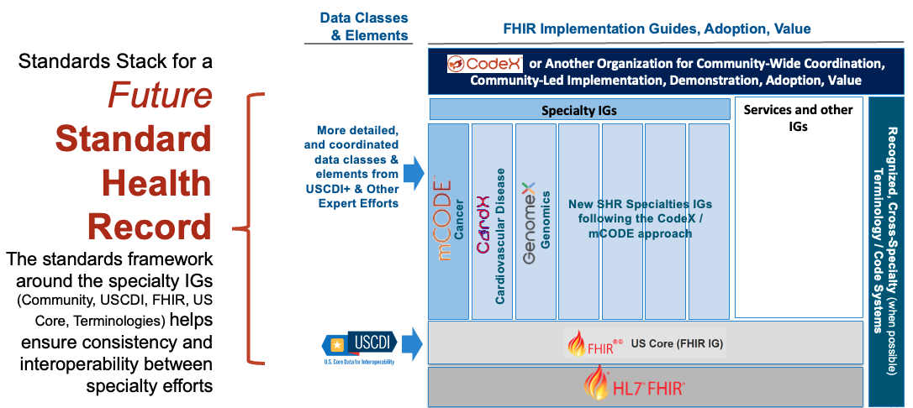
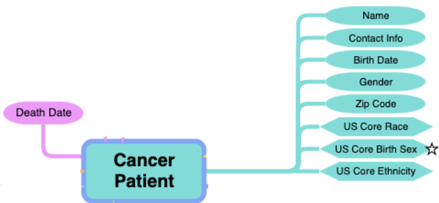
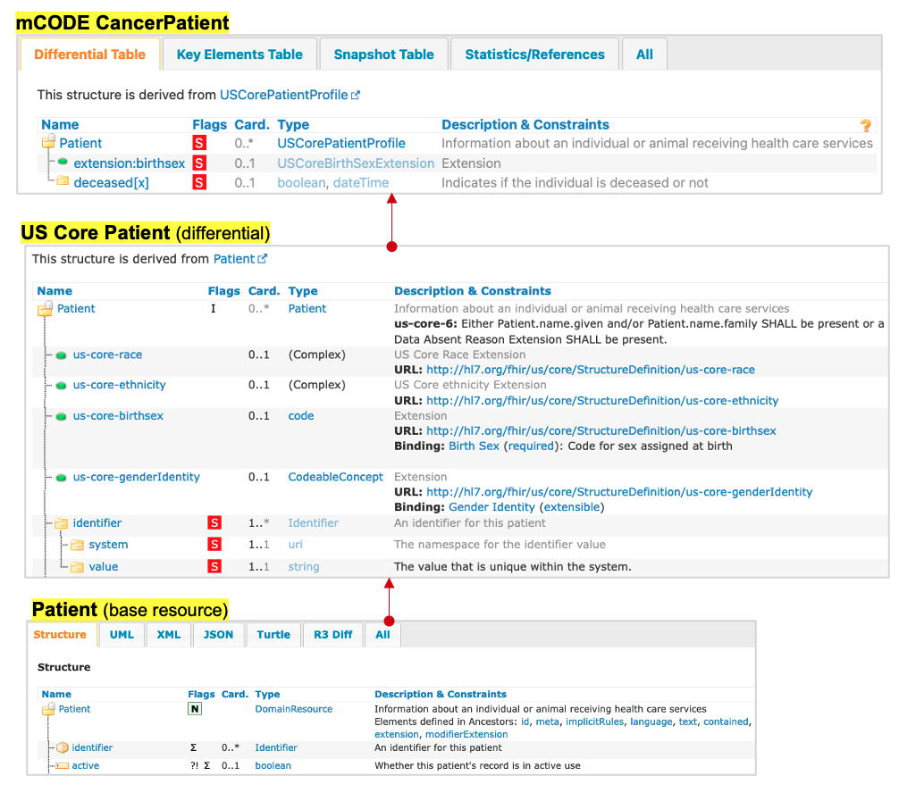
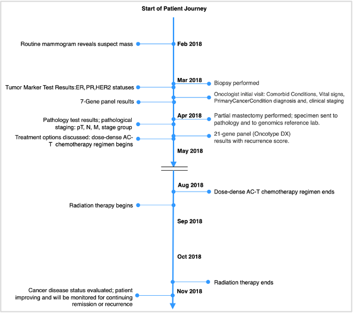
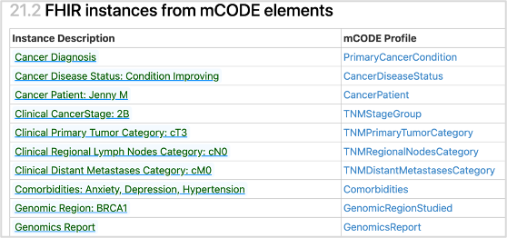
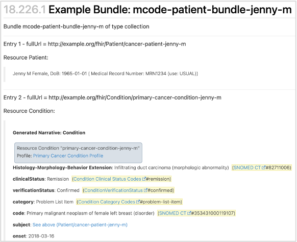
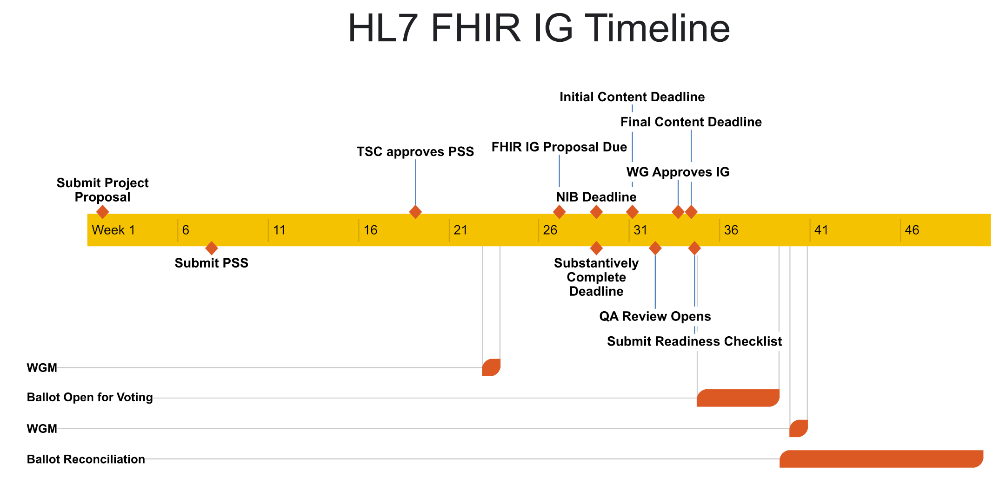

Technical Deep Dive into FHIR-Based Standards Development
Tailored for clinical subject matter experts, standards developers, and systems implementers.
Health data standards help patients, health systems, payers, researchers and others who need to work together communicate using a common language. Health data standards can specify clearly how data are collected, stored, shared, and/or used such that every piece of data can be unambiguously understood by all entities within the health ecosystem. These standards are not the end product, and instead are an essential means empowering accurate, electronic data sharing to improve health care and access, and to reduce burden and costs.
The following sections will guide clinical and technical experts through Health Level 7® (HL7®) processes to refine clinical requirements and develop implementation guides (IGs). It is advised that throughout the process the teams undertaking these efforts utilizing existing communities and resources including chat.fhir.org, HL7 Work Groups, and FHIR Accelerators. These external groups have extensive expectance in all aspects of FHIR software development and can significantly reduce the time required to develop real-world impactful software for the specialty community.
The best standards are demanded by product consumers; community-driven and developed within an open, royalty-free standards organization; often recommended or mandated by the government; well documented; demonstrated to provide value; easy to implement in systems and workflows; and widely adopted by the community.
CodeX / mCODE Standards Development Tutorial
The following is an excellent video by May Terry (key mCODE author) that provides a deep dive into the strategy and process employed to develop the mCODE FHIR IG standard for oncology. This strategy and approach should be applicable across health specialties. Selected points from the video are summarized in text and graphics on the rest of this page.
- Introduction and Agenda - 5 mins
- mCODE Development History - 4 mins
- mCODE Modeling Methodology - 7 mins
- Define Use Case - 5 min
- Gathering Relevant Clinical Information - 13 mins
- Translate Information into FHIR IGs - 15 mins
- Validate FHIR IG - 5 mins
- Case Study: CardX - 5 mins
- Case Study: GenomeX - 4 mins
- mCODE Deeper Dive: Q&A and general discussion - 89 mins
Key Organizations and Foundational Standards
Health Level Seven (HL7) develops, approves, and maintains medical interoperability standards across the world. While it is possible to develop interoperability standards outside HL7, in practice it is unlikely these standards will be widely adopted without HL7 approval. As a result, it is critical to follow HL7 processes and collaborate with HL7 work groups when starting or modifying any IG. This collaboration is best started early in the IG development process at or before the first draft of the IG is complete.
The Office of the National Coordinator for Health Information Technology (ONC) is the “principal federal entity charged with coordination of nationwide efforts to implement and use the most advanced health information technology and the electronic exchange of health information”. ONC spearheads assembling community agreement on a “standardized set of health data classes and constituent data elements for nationwide, interoperable health information exchange”, called the United States Core Data for Interoperability (USCDI). ONC also coordinates the USCDI+ initiative, which supports domain or program-specific data element lists that operate as extensions to the existing USCDI. The mCODE team is coordinating closely with the USCDI+ cancer domain team.
ONC has increasingly partnered with HL7, the preeminent organization for gathering communities to develop standards that enable health data interoperability. Of the many important efforts within HL7, two are foundational for the work described in this Playbook: Fast Healthcare Interoperability Resources (FHIR) and US Core FHIR Implementation Guide. Both are further explained below.
Standards Development Overview
The following graphic illustrates key steps that are necessary and/or useful in developing and publishing a quality, HL7 standard, FHIR Implementation Guide. This process is agile (thus the cycles representing steps), with iterations and interactions between each cycle.
Simple Clinical Concept Example: Systolic Blood Pressure
The following example shows how the FHIR Implementation Guide development process outlined above can be applied to a simple clinical concept, such as systolic blood pressure:
Step 1: Clinicians are consulted about what information and factors need to be captured regarding systolic blood pressure, for example:
- What is the measurement value
- What units are used to measure the value
Note that this is a simplified example to introduce the process. There are other factors to be considered (e.g., how the blood pressure measured, where it is measured on the body, body position, etc).
Step 2: Create a data dictionary to capture how that information from Step 1 should be represented. Consult with clinical terminology subject matter experts to fill out the data dictionary. Review results with clinicians and gain their approval.
Step 3: Determine the FHIR design from the data dictionary to exchange the required systolic blood pressure information. Review results with the community (clinicians, terminologists, technologists) and gain consensus.
Additional Considerations to Enable Cross-Health Data Interoperability
When defining Use Cases and the associated data standards, make interoperable data exchange the top priority. Data exchange standards can also influence and provide value for data collection. Data that will be exchanged must be collected or be computed from data that are collected. How the data are stored within systems can be defined by the implementor to meet engineering requirements. Implementers may find value in leveraging data exchange standards in their storage schemes. How the data are displayed and manipulated (e.g., interfaces for collection, aggregation, review, computation, analysis, etc.) can be defined by the implementor to the benefit of users. Implementers may find value in leveraging data exchange standards in their display and manipulation schemes.
Following the Design Principles has many benefits, including helping to ensure consistency with other efforts which is critical in working towards a unified lifetime Standard Health Record where an individual's health data is captured accurately and consistently across medical systems and specialties (see figure below). Leveraging established clinical requirements and a common standards framework of US Core and standard terminologies, as CodeX Use Cases and mCODE do, enables individual specialties to develop their IGs independently and yet as consistently as possible. The Standard Heath Record vision could extend the CodeX/mCODE approach to help new specialties expand communities, and to develop and test standards that are interoperable across specialties, and that drive adoption and value for patient health care and research.
Image is placeholder only - will replace with accessible image

Clinical Requirements:
Information Needs and Data Dictionary.
For clinical subject matter experts, the goal is to guide the initial steps of the implementation development process to prioritize information requirements within a data dictionary needed for the use case. Thus, a well-rounded team of clinical subject matter experts is necessary; for guidelines on how to establish this team see the Clinical Requirements section in the high-level overview of standards development.
One of the first task of the clinical requirements team is to the define scope of the data dictionary. Both CodeX and FHIR design principles recommend a minimalist approach: cover the most common and important use cases, not necessarily all edge cases. This approach speeds development work, improves the odds of reaching consensus, and creates a final product that can be expanded to meet future needs.
This sub-step and subsequent steps are typically iterative. For example, the clinical expert group may develop a first draft of the Data Dictionary. Subsequent steps often result in requests to the clinical experts for clarification or suggestions for updates to the Data Dictionary based on FHIR development, implementation, and testing.
Defining the Data Dictionary
A data dictionary is a conversion of the clinical information needed for the use case into logical model data elements.
To begin to define the data dictionary, the clinical expert group will identify a set clinical requirements for a use case. The clinical requirements and data dictionary template provides an example assessment of a cancer patient and instructions for filling out the template. The spreadsheet Clinfo_NGS contains necessary data elements for the use case, data sources, references to prior work, and under the "Use Case Relevance" column a expert assessment of “Relevance to Patients Like Mine” to help prioritize the minimal set of information needed. A blank spreadsheet for clinical requirement development can be found in the Clinfo_Template spreadsheet.
Once information needs have been prioritized, the group should consider whether the data elements should be:
- Required - Data is unusable or makes no sense if not present.
- Optional - Data is not always relevant and not needed for data to be usable.
- Must Support - Software is required to support this data element
The group can next develop the data dictionary - a "Rosetta Stone" that defines data elements mapped to the clinical information requirements. An example data dictionary and a blank template can be found in the clinical requirements and data dictionary template in the DEDToClinfo_Example and DEDToClinfo_Template spreadsheets respectively.
Common Challenges Related to Compiling Clinical Information Requirements and a Data Dictionary
- Starting with a large set of “important” data needs/elements, rather than focusing on the needs for each prioritized use cases.
- Not thinking about how to maximize the utility of information across other use cases. For example, the information needed for initial diagnosis of cancer, might also be used for clinical trials matching or conducting trials. Slight changes to the initial requirements could enable the same information to be useable across all three use cases.
- Asking for interpreted information rather than source data because that is established practice. For example, asking for age, rather than collecting birth data and date/time of the encounter.
These and other potential pitfalls can be largely avoided by following the Design Principles compiled based on CodeX and mCODE experience.
Clinical Review of the Data Dictionary
Before handing the data dictionary over to the FHIR IG development team, the clinical team should answer the following questions:
- Does the Data Dictionary address the goal and needs of the use cases?
- From a clinical perspective, will the new data dictionary be compatible with other, known or prospective data dictionaries with the specialty and outside of it?
FHIR IG Development:
Integrating Clinical Requirements into a Specialty FHIR Implementation Guide
Once the clinical subject matter expert group has at least a draft of their data dictionary for the use case, work can begin on incorporating the clinical information into one or more FHIR IGs. Once the FHIR IG development team has been assembled, both the IG development team and the clinical requirements team will collaborate to ensure the clinical information needs are captured properly in the FHIR IG, that the FHIR IG is implementable in systems and processes, and that it is consistent with the Design Principles.
A specialty should aim for a single, core IG that represents the minimal clinical requirements for set of Use Cases concepts that are common within the specialty. The mCODE FHIR IG is an example of a core IG. The core IG can be appended and improved as Use Cases are executed. Supplemental IGs can be built when new data requirements are not considered core, but important for smaller Communities and/or edge applications.
Framework for FHIR Implementation Guide Development
As is likely clear by now, use of the FHIR exchange standard is foundational to the recommendations in this Playbook, technical experts will need a deep understanding of FHIR to guide processes. Below are some helpful guides to better understanding FHIR:
- Fast Healthcare Interoperability Resources (FHIR) is the health data sharing framework widely used now and is being mandated for certain applications through ONC.
- US Core FHIR Implementation Guide (IG) encapsulates into the FHIR framework the data classes and data elements defined through US Government coordination and the United States Core Data for Interoperability (USCDI) and will evolve as Government work evolves. HL7 requires IGs designed for the US healthcare system to be based on the US Core FHIR framework unless a waiver is approved by HL7.
- FHIR Tutorials
- FHIR Basics for Post-Acute Care by Jessica Skopac (MITRE) - approachable introduction to FHIR for the non-technical
- HL7 Courses on FHIR
- Intro to FHIR by James Agnew (Smile CDR)
- FHIR for Developers - Getting Started by Gino Canessa (Microsoft)
- Standard Terminology. (refs: HIMSS, CMS) A terminology code system is a managed collection of structured terminologies (concepts like procedures, diagnoses, treatments, measurements, results, etc.) with the objective that there is one globally unique code (alpha-numeric, typically) to represent each concept. Code systems, terminologies, and vocabularies are not the same things, but are highly related and often used together or for the same idea. SNOMED CT, LOINC, CPT are some examples of widely used code systems. The benefit of representing a concept with standard terminology in an IG (and elsewhere) is that the concept can be implemented (in FHIR or other standards) in health information systems and understood everywhere the concept is collected, stored, exchanged, and used.
- FHIR Shorthand (FSH) is a domain-specific language for defining FHIR artifacts involved in creation of FHIR Implementation Guides (IG). The goal of FSH is to allow Implementation Guide (IG) creators to more directly express their intent with fewer concerns about underlying FHIR mechanics, and efficiently produce high-quality FHIR IGs.” FSH is an HL7 standard. FSH is increasingly used around the world.
There are excellent tutorials on how to leverage FSH to create FHIR IG:
- FSH School
- Mark Kramer - Learn to FSH: A friendly introduction to FHIR Shorthand | DevDays 2023 Amsterdam
- PDF version)
Data Model
The first task of the FHIR IG development group is to review the output of the clinical group’s data dictionary. It is helpful if some members of each group have been working together, even before the first draft of the dictionary has been completed. Questions between the groups will be common and essential to taking additional steps.
The next step is to start development of a conceptual model from the data dictionary and begin the process of identifying existing FHIR artifacts, IGs, profiles, and extensions that the developing IG can use. it is critical that specialty communities minimize changes and modification to existing FHIR artifacts to maintain consistency within the larger healthcare data exchange community. This helps ensure the final IG and associated software more easily accepted and adopted across all healthcare domains.
Below is mCODE's conceptual model and an interactive version can be found within the mCODE IG.
Terminologies
As previously noted, terminologies, standard clinical code systems, are important for unambiguously defining how data within the data element are represented. When a term cannot be found within an existing code system, it’s possible to work with the owner of the code system to add new terms, provided the justification is convincing.
Profiles and Extensions
FHIR profiles customize the standard FHIR base Resource definitions by constraining which values and elements of a resource are required and which are not for a particular context or use case. FHIR extensions add data elements and/or constraints the standard FHIR base resource definitions to create more specific, customized resource definitions for a particular context or use case.
The following shows how mCODE derived profiles from the aforementioned framework of the US Core FHIR IG. The subsequent three figures illustrate how the mCODE conceptual model is represented in the FHIR IG for patient demographics, labs, and medications to match the clinical information needs as structured data.
To ensure consistency with the wider interoperability community, the IG development team should first check the FHIR Implementation Guide Registry, FHIR Package Registry, and FHIR Extension Registry for existing FHIR artifacts that might be reused in the developing IG. If an appropriate existing artifact cannot be found, new resources, profiles, or extensions may need to be created.
Before creating a new FHIR artifact, the IG development team should discuss the proposed artifact and its purpose with the HL7 Working Group responsible for the FHIR Resource being extended. All FHIR resources and profiles have an HL7 Working Group that is responsible for their development. The HL7 Working Group is listed on the FHIR resource page itself, or in the case of a profile, in the footer of the profile page. Reviewing the proposed artifact with the responsible working group provides an opportunity for them to understand the purpose for the extension and offer guidance in alignment with their development strategy for the resource.
When packages and other IGs are leveraged by a project, they become dependencies of that project. When depending on other FHIR packages and IGs to leverage, it is important to consider what versions to use, since in many cases, multiple versions may exist.
There are many factors that should be considered when determining what version of a FHIR package or IG to use:
- Have they been officially published and if not, when will they publish? This will affect the development timeline.
- What level of adoption does that version have or will have in the near future? Using the latest version may push adoption further out instead of using an older version in broader use.
- What regulations may apply? Regulations can stipulate what versions can be used (e.g., US Core version requirements for product certifications).
Planning FHIR IG Development: A Patient Demographics Example
There are a number of important high-level questions to consider when developing a FHIR IG. These questions can be found in the higher level FHIR IG Development section.
 Example: Patient Demographics
- Relevant external profiles are added as an entry to the mCODE Patient Bundle profile.
- Possible because mCODE’s bundle is “open” (only CancerPatient is a required entry)
- Guidance for inclusion is narrative (not computable or enforceable)
Validating Modeling Assumptions
Next, create a comprehensive set of FHIR resources that capture the product of the previous steps. One approach to validating the work is to match it to representative use case personas. The next figure illustrates how parts of a particular patient journey are mapped into data elements and FHIR. See other mCODE examples, represented in the mCODE FHIR IG.
A particular patient journey mapped into data elements and FHIR, to validate the model.



Creating the FHIR Implementation Guide
Initial creation of a FHIR IG can start quite early and iterate as the model is improved.
HL7 Standardization
Health Level Seven (HL7) is the preeminent organization for gathering communities to develop standards that enable health data interoperability. The US and other nations increasingly look to HL7 as the place for health standards development. >/p>
HL7 Standards Process
Agreeing on content of the FHIR IG to be standardized and then moving the IG through the HL7 process can take many months – on the order of a year from start to publication of a standard. Time required depends on level of alignment of the IG authors, and also on how familiar project's standards process leader is with HL7 processes and people but can be many months to more than a year. Projects should make sure to include sufficient time in the use case plan, and also start the standardization process early, before a complete draft FHIR IG is available.
Resources that are important to review and understand:
- HL7 Essentials. Index to information on HL7, HL7 processes and other information that is relevant to anyone planning to work or working in HL7.
- Understanding the Standards Process. Explains what HL7 does, rationale for the processes, and how to maximize the benefits of using the process.
-
FHIR Implementation Guide Process Flow. When creating a FHIR IG that is intended to an HL7 standard, there are a number of specific steps to complete. A timeline based on HL7's early 2024 processes is shown here. This is subject to change. Please check the previous link for the latest.
 - HL7's graphic - HL7 Process Flow and Timeline - is also helpful in that steps in the HL7 process are linked to details on each step.
Maintaining HL7 Standards
Once the first version of a specialty standard, the Standard for Trial Use (STU), has been completed and published, work begins on maintaining the standard over time. Any standard that is valued, implemented into systems, used widely will generate requests for updated versions.
Updates to specialty standards maybe needed for a variety of reasons. The standards on which your standard depends (e.g., FHIR, US Core) may be updated, and may require or at least motivate changes to standards that depend on them. Users may ask vendors who've integrated your standard or the vendors themselves may ask for updates. Government rules and regulations may motivate changes.
Because changes to your standard may be required over time, it's important to keep a core of the original IG development team intact (and add to that core), with the necessary skills (e.g., clinical, FHIR, HL7) available when needed. It's important to keep a good relationship with the sponsoring HL7 Work Group. It's necessary to have a system to collect, organize, prioritize, and address requests for changes and other comments - likely the same system used for building the original standard (e.g., Jira at HL7).
Be aware that the interest of the original teams, and even that of the Use Case champions, may change as the work enters maintenance. As repeatedly emphasized in this Playbook, think about which members of the community care most about ensuring a standard is maintained in a well-governed, careful manner. For example, vendors who've implemented the standard and included the standard in products to many customers should care about how the standard is maintained and evolved.
Best Practices for Smoother HL7 Standardization, Based on the CodeX/mCODE Experience
- The standards process leader for the use case should have thorough knowledge of HL7 processes and standardization schedule.
- Build HL7 standardization into your use case plan from the start. Allow plenty of time to go through the process.
- Have a good relationship with a sponsoring HL7 Work Group and its leadership. Ensure they are included in plans and progress. In many cases HL7 Work Group may have deep expertise within the community's specialty; however, even if they do not, they will know HL7 standards, HL7 processes, and work that other Work Groups are doing that may be related to your work.
- Collaborate with a HL7 FHIR Accelerator like CodeX. This path has the benefit of working within an organization that will be more knowledgeable of and more closely connected to HL7 people and processes.
- Discuss any new extension and its purpose with the HL7 Working Group that has responsibility for the FHIR Resource being extended, so that they understand the need and can provide guidance.